宋庆龄学校信息技术
信息数字化
信息与数字化
数制转换
计算机网络
计算机网络概论
网络协议(上)
网络协议(下)
网络协议作业
计算机系统
计算机组成
计算机配置
期中复习
期中复习
人工智能
图像编码
PyCharm入门
图像滤镜实验
图像识别实验（上）
图像识别实验（下）
数据库
SQL
网页设计
HTML
部分作业展示
Elina
Julia
Megan
Sunday
Ray
Jenny
Rebecca
Emily
Haozu
Fifi
Chloe
Lily
期末大作业
宋庆龄学校信息技术
»
部分作业展示
View page source
部分作业展示
快来看看同学们力荐的电影吧！ （点击图片即可进入网页）
Elina
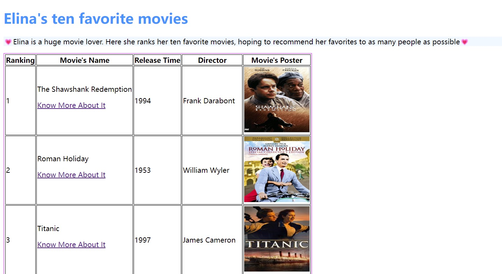
Julia
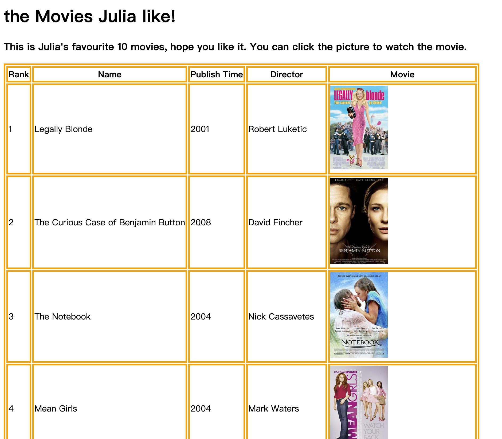
Megan
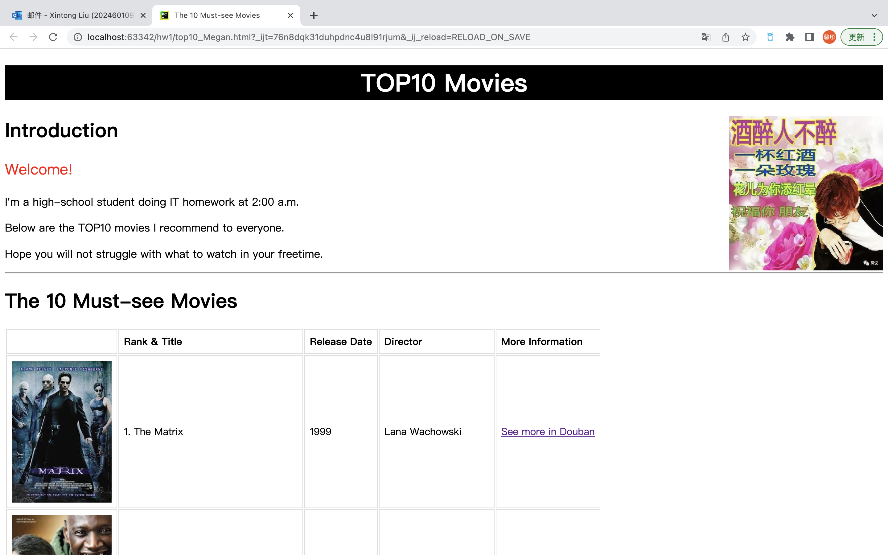
Sunday
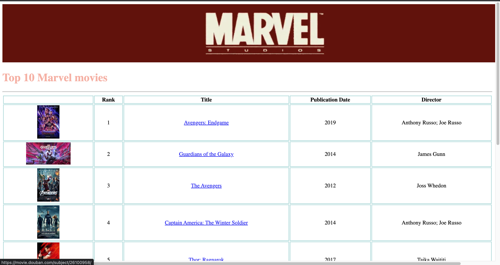
Ray
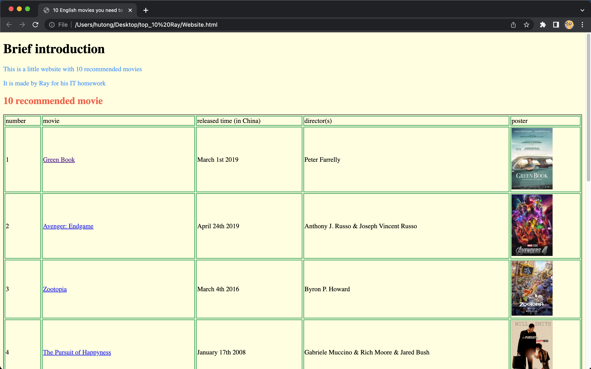
Jenny
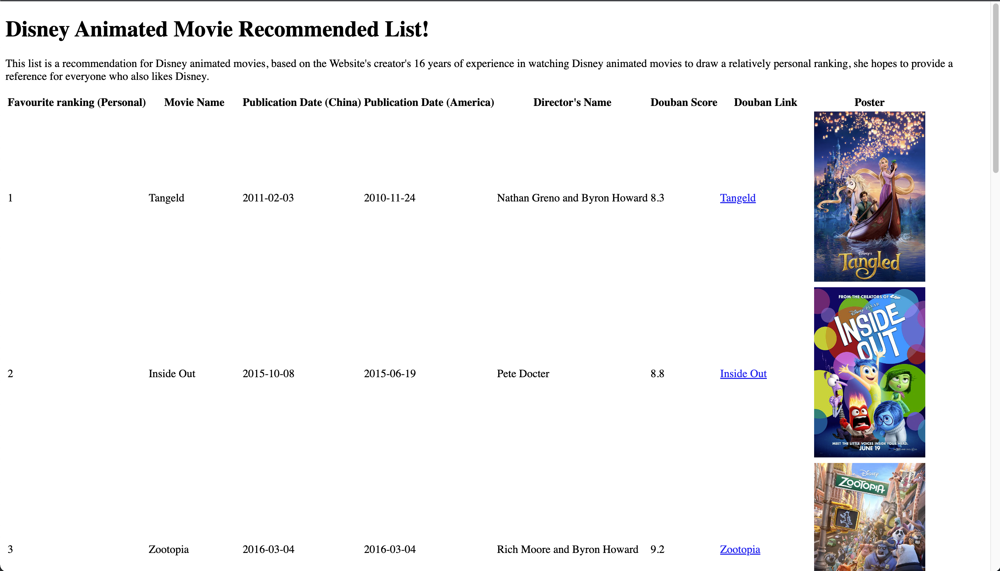
Rebecca
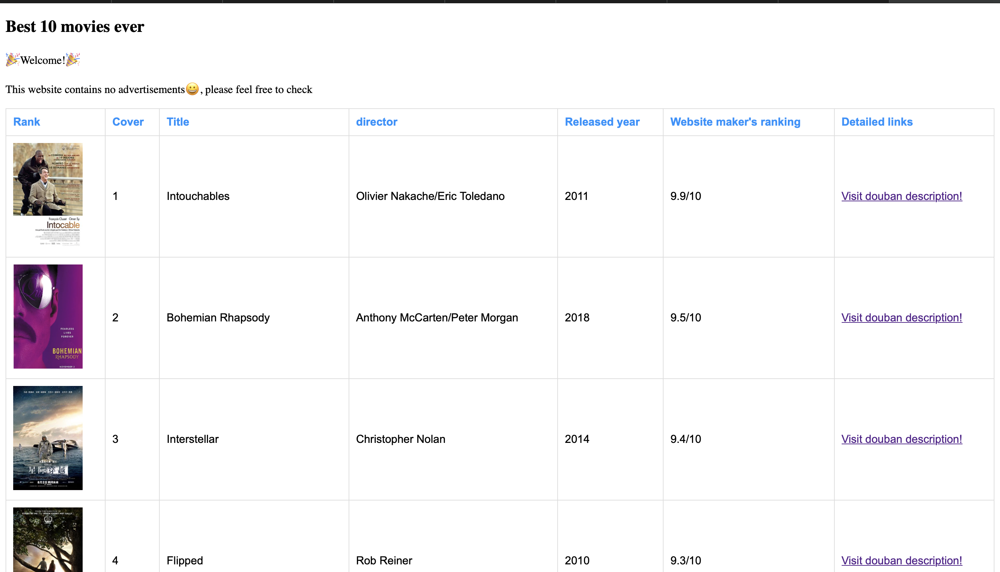
Emily
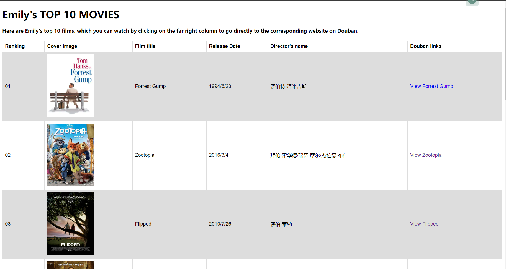
Haozu
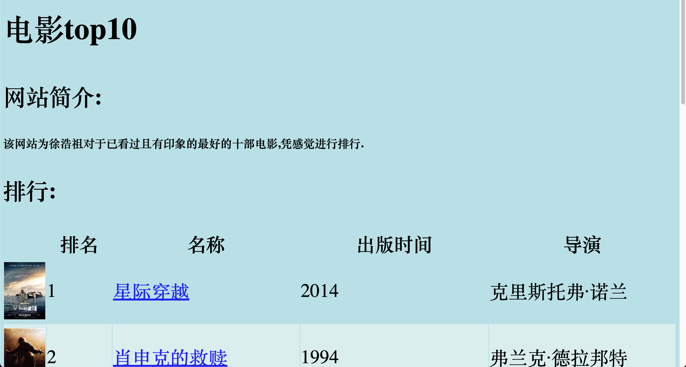
Fifi
Chloe
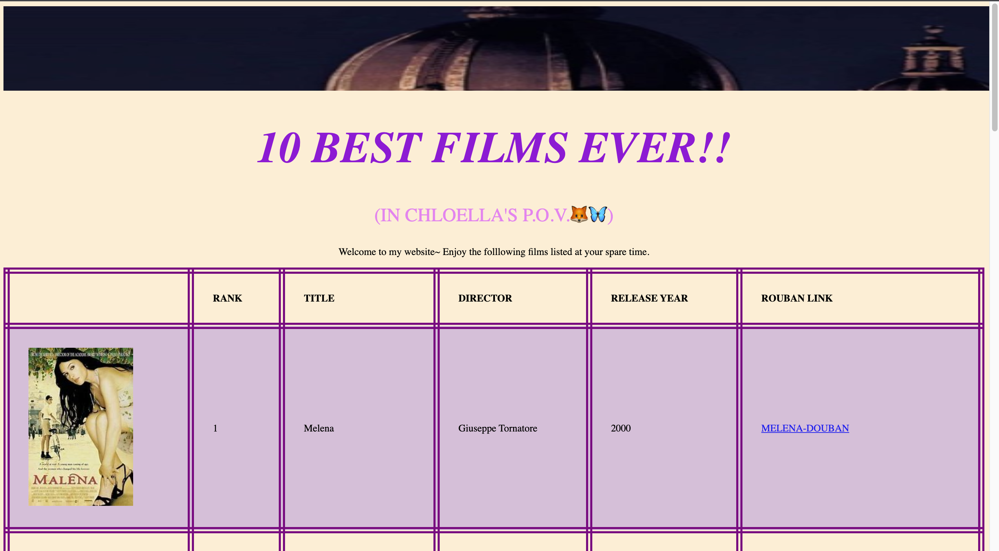
Lily
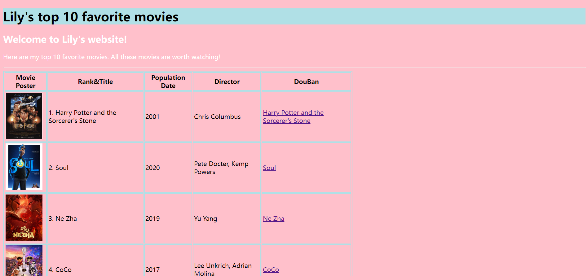